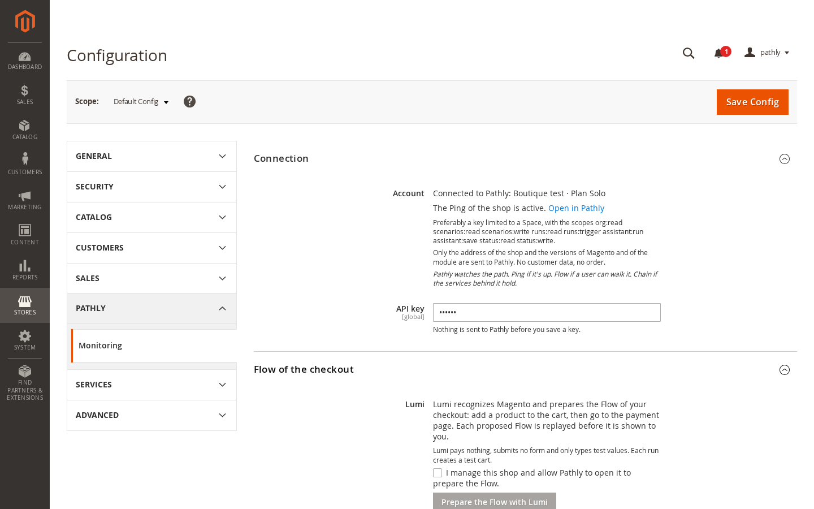
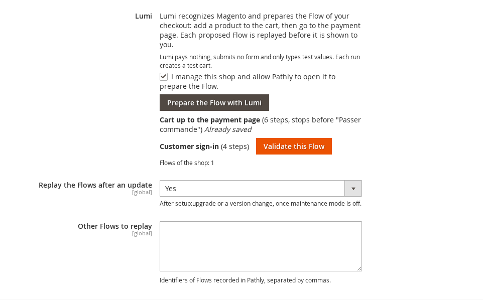
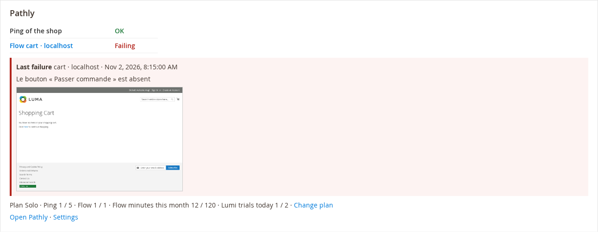
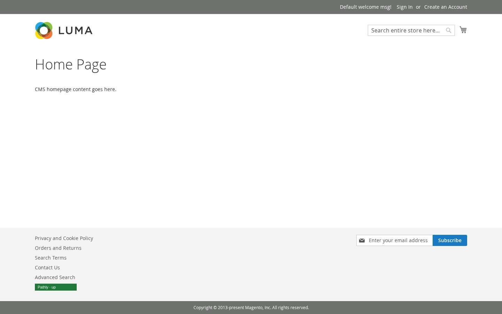

User and installation guide, version 1.0.0. For Magento Open Source and Adobe Commerce 2.4.6, 2.4.7 and 2.4.8.
Pathly watches the path. Ping if it's up. Flow if a user can walk it. Chain if the services behind it hold.
The extension is free. It connects to a Pathly account: the Solo plan is free, without credit card. Paid Pathly plans are a separate subscription (prices on pathlyhq.com).
setup:upgrade, or when Magento or a module changes version.| Magento Open Source or Adobe Commerce | 2.4.6, 2.4.7, 2.4.8 |
|---|---|
| PHP | 8.1 to 8.4, as supported by your Magento version |
| Cron | The Magento cron must run (replay and badge refresh every 5 minutes). |
| Outgoing HTTPS | The shop must reach https://api.pathlyhq.com. No other address is called. |
| Pathly account | Free Solo plan, without credit card. |
composer require pathly/module-monitoring bin/magento module:enable Pathly_Monitoring bin/magento setup:upgrade bin/magento cache:flush
In production mode, also run bin/magento setup:di:compile and bin/magento setup:static-content:deploy.
org:read scenarios:read scenarios:write runs:read runs:trigger assistant:run assistant:save status:read status:write.
Lumi pays nothing, submits no form and only types test values. If Lumi finds nothing (heavily customized theme), record the Flow in Pathly, without code, and type its identifier in Other Flows to replay.

Errors you may see: Lumi is paused, all trials of the day are used (the number depends on the plan), Lumi is busy (try again in a minute), the plan has no Flow left.
Two signals ask for a replay: every bin/magento setup:upgrade, and a change of the installed versions (Magento, modules) seen by the cron every 5 minutes. The replay waits for the end of the maintenance mode. Two replays are at least 10 minutes apart. Turn it off with Replay the Flows after an update.
bin/magento pathly:sync # what the cron does, now bin/magento pathly:sync --replay # replay the Flows now
On the admin dashboard: state of the Ping and of each Flow, date, message and screenshot of the last failure, plan and quotas, links to Pathly and to the settings. The data is refreshed every 5 minutes.

Off by default. Show the badge publishes your Pathly status page. Then choose In the footer, or place the "Pathly availability badge" widget (Content > Widgets). The shop keeps a copy of the badge and serves it itself: visitors load nothing from Pathly. Turning the badge off unpublishes the status page if the extension had published it.

| Pathly_Monitoring::config | Settings (Stores > Configuration > Pathly) |
|---|---|
| Pathly_Monitoring::lumi | Prepare and validate a Flow with Lumi |
| Pathly_Monitoring::dashboard | Panel of the dashboard |
Each run of a Flow creates a test cart on the shop. It can trigger your abandoned cart reminders. Exclude the test customer or address from them.
bin/magento module:uninstall -r Pathly_Monitoring
Settings, state, scheduled jobs and badge widgets are deleted. Your Ping and Flows stay in your Pathly account.
simon@pathlyhq.com